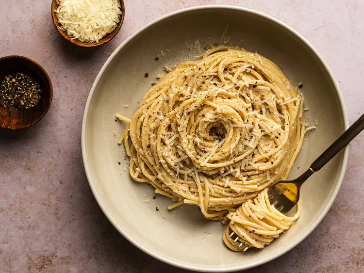

Cacio e Pepe

Description
Cacio e Pepe, a Roman pasta classic, is a burst of flavor simplicity. It's a delightful dance of textures and tastes – each bite delivers a perfect balance.
Imagine al dente spaghetti tossed in a lively mix of black pepper and golden olive oil. Enter Pecorino Romano, elevating the dish with its creamy richness.
Join the pasta party – Cacio e Pepe proves that sometimes, the most enjoyable things are the simplest.
Ingredients:
- 400g (14 oz) of spaghetti or your preferred pasta
- 1 cup Pecorino Romano cheese, freshly grated
- 1.5 tablespoons freshly ground black pepper
- Salt, to taste
- Extra virgin olive oil
Instructions:
Boil the Pasta:
- Bring a large pot of salted water to a rolling boil.
- Cook the pasta according to the package instructions until al dente.
Prepare the Sauce:
- While the pasta is cooking, heat a generous drizzle of olive oil in a large pan over medium heat.
- Add the freshly ground black pepper to the pan, toasting it for about a minute to release its flavor.
Combine Pasta and Sauce:
- Once the pasta is cooked, reserve a cup of the pasta water and then drain the rest.
- Add the drained pasta to the pan with the pepper and toss to coat the pasta evenly with the peppery oil.
Cheese, Please:
- Gradually sprinkle the freshly grated Pecorino Romano over the pasta, stirring continuously to create a creamy sauce. If needed, add a bit of the reserved pasta water to achieve the desired consistency.
Serve and Enjoy:
- Plate the cacio e pepe and finish with an extra sprinkle of Pecorino Romano and black pepper.
- Serve immediately while the pasta is hot and the cheese is melty.